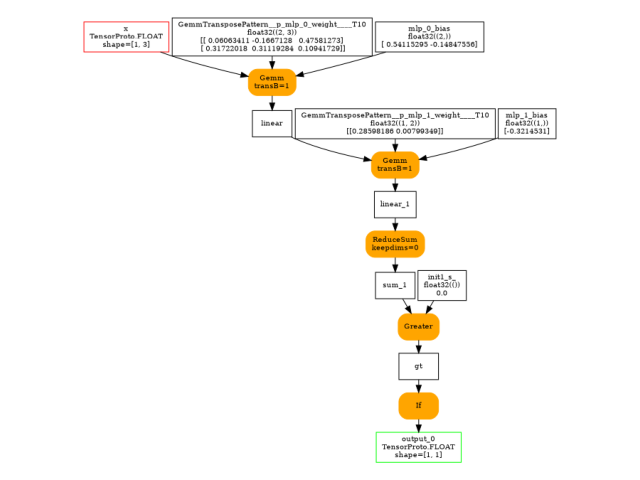
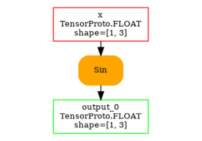
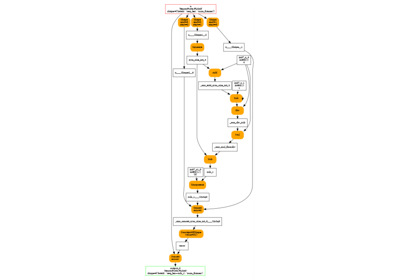

Note
Go to the end to download the full example code.
to_onnx and a model with a test
Control flow cannot be exported with a change.
The code of the model can be changed or patched
to introduce function torch.cond().
A model with a test
import torch
from onnx_array_api.plotting.graphviz_helper import plot_dot
from experimental_experiment.helpers import pretty_onnx
from experimental_experiment.torch_interpreter import to_onnx
We define a model with a control flow (-> graph break)
class ForwardWithControlFlowTest(torch.nn.Module):
def forward(self, x):
if x.sum():
return x * 2
return -x
class ModelWithControlFlow(torch.nn.Module):
def __init__(self):
super().__init__()
self.mlp = torch.nn.Sequential(
torch.nn.Linear(3, 2),
torch.nn.Linear(2, 1),
ForwardWithControlFlowTest(),
)
def forward(self, x):
out = self.mlp(x)
return out
model = ModelWithControlFlow()
Lets check it runs.
x = torch.randn(1, 3)
model(x)
tensor([[1.3398]], grad_fn=<MulBackward0>)
As expected, it does not export.
try:
torch.export.export(model, (x,))
raise AssertionError("This export should failed unless pytorch now supports this model.")
except Exception as e:
print(e)
def forward(self, arg0_1: "f32[2, 3]", arg1_1: "f32[2]", arg2_1: "f32[1, 2]", arg3_1: "f32[1]", arg4_1: "f32[1, 3]"):
# File: ~/vv/this312/lib/python3.12/site-packages/torch/nn/modules/linear.py:134 in forward, code: return F.linear(input, self.weight, self.bias)
linear: "f32[1, 2]" = torch.ops.aten.linear.default(arg4_1, arg0_1, arg1_1); arg4_1 = arg0_1 = arg1_1 = None
linear_1: "f32[1, 1]" = torch.ops.aten.linear.default(linear, arg2_1, arg3_1); linear = arg2_1 = arg3_1 = None
# File: ~/github/experimental-experiment/_doc/recipes/plot_exporter_recipes_c_cond.py:27 in forward, code: if x.sum():
sum_1: "f32[]" = torch.ops.aten.sum.default(linear_1); linear_1 = None
ne: "b8[]" = torch.ops.aten.ne.Scalar(sum_1, 0); sum_1 = None
item: "Sym(Eq(u0, 1))" = torch.ops.aten.item.default(ne); ne = item = None
def forward(self, arg0_1: "f32[2, 3]", arg1_1: "f32[2]", arg2_1: "f32[1, 2]", arg3_1: "f32[1]", arg4_1: "f32[1, 3]"):
# File: ~/vv/this312/lib/python3.12/site-packages/torch/nn/modules/linear.py:134 in forward, code: return F.linear(input, self.weight, self.bias)
linear: "f32[1, 2]" = torch.ops.aten.linear.default(arg4_1, arg0_1, arg1_1); arg4_1 = arg0_1 = arg1_1 = None
linear_1: "f32[1, 1]" = torch.ops.aten.linear.default(linear, arg2_1, arg3_1); linear = arg2_1 = arg3_1 = None
# File: ~/github/experimental-experiment/_doc/recipes/plot_exporter_recipes_c_cond.py:27 in forward, code: if x.sum():
sum_1: "f32[]" = torch.ops.aten.sum.default(linear_1); linear_1 = None
ne: "b8[]" = torch.ops.aten.ne.Scalar(sum_1, 0); sum_1 = None
item: "Sym(Eq(u0, 1))" = torch.ops.aten.item.default(ne); ne = item = None
Could not guard on data-dependent expression Eq(u0, 1) (unhinted: Eq(u0, 1)). (Size-like symbols: none)
consider using data-dependent friendly APIs such as guard_or_false, guard_or_true and statically_known_true.
Caused by: (_export/non_strict_utils.py:1130 in __torch_function__)
For more information, run with TORCH_LOGS="dynamic"
For extended logs when we create symbols, also add TORCHDYNAMO_EXTENDED_DEBUG_CREATE_SYMBOL="u0"
If you suspect the guard was triggered from C++, add TORCHDYNAMO_EXTENDED_DEBUG_CPP=1
For more debugging help, see https://docs.google.com/document/d/1HSuTTVvYH1pTew89Rtpeu84Ht3nQEFTYhAX3Ypa_xJs/edit?usp=sharing
For C++ stack trace, run with TORCHDYNAMO_EXTENDED_DEBUG_CPP=1
The following call raised this error:
File "~/github/experimental-experiment/_doc/recipes/plot_exporter_recipes_c_cond.py", line 27, in forward
if x.sum():
The error above occurred when calling torch.export.export. If you would like to view some more information about this error, and get a list of all other errors that may occur in your export call, you can replace your `export()` call with `draft_export()`.
The exporter fails with the same eror as it expects torch.export.export to work.
def forward(self, arg0_1: "f32[2, 3]", arg1_1: "f32[2]", arg2_1: "f32[1, 2]", arg3_1: "f32[1]", arg4_1: "f32[1, 3]"):
# File: ~/vv/this312/lib/python3.12/site-packages/torch/nn/modules/linear.py:134 in forward, code: return F.linear(input, self.weight, self.bias)
linear: "f32[1, 2]" = torch.ops.aten.linear.default(arg4_1, arg0_1, arg1_1); arg4_1 = arg0_1 = arg1_1 = None
linear_1: "f32[1, 1]" = torch.ops.aten.linear.default(linear, arg2_1, arg3_1); linear = arg2_1 = arg3_1 = None
# File: ~/github/experimental-experiment/_doc/recipes/plot_exporter_recipes_c_cond.py:27 in forward, code: if x.sum():
sum_1: "f32[]" = torch.ops.aten.sum.default(linear_1); linear_1 = None
ne: "b8[]" = torch.ops.aten.ne.Scalar(sum_1, 0); sum_1 = None
item: "Sym(Eq(u0, 1))" = torch.ops.aten.item.default(ne); ne = item = None
def forward(self, arg0_1: "f32[2, 3]", arg1_1: "f32[2]", arg2_1: "f32[1, 2]", arg3_1: "f32[1]", arg4_1: "f32[1, 3]"):
# File: ~/vv/this312/lib/python3.12/site-packages/torch/nn/modules/linear.py:134 in forward, code: return F.linear(input, self.weight, self.bias)
linear: "f32[1, 2]" = torch.ops.aten.linear.default(arg4_1, arg0_1, arg1_1); arg4_1 = arg0_1 = arg1_1 = None
linear_1: "f32[1, 1]" = torch.ops.aten.linear.default(linear, arg2_1, arg3_1); linear = arg2_1 = arg3_1 = None
# File: ~/github/experimental-experiment/_doc/recipes/plot_exporter_recipes_c_cond.py:27 in forward, code: if x.sum():
sum_1: "f32[]" = torch.ops.aten.sum.default(linear_1); linear_1 = None
ne: "b8[]" = torch.ops.aten.ne.Scalar(sum_1, 0); sum_1 = None
item: "Sym(Eq(u0, 1))" = torch.ops.aten.item.default(ne); ne = item = None
Could not guard on data-dependent expression Eq(u0, 1) (unhinted: Eq(u0, 1)). (Size-like symbols: none)
consider using data-dependent friendly APIs such as guard_or_false, guard_or_true and statically_known_true.
Caused by: (_export/non_strict_utils.py:1130 in __torch_function__)
For more information, run with TORCH_LOGS="dynamic"
For extended logs when we create symbols, also add TORCHDYNAMO_EXTENDED_DEBUG_CREATE_SYMBOL="u0"
If you suspect the guard was triggered from C++, add TORCHDYNAMO_EXTENDED_DEBUG_CPP=1
For more debugging help, see https://docs.google.com/document/d/1HSuTTVvYH1pTew89Rtpeu84Ht3nQEFTYhAX3Ypa_xJs/edit?usp=sharing
For C++ stack trace, run with TORCHDYNAMO_EXTENDED_DEBUG_CPP=1
The following call raised this error:
File "~/github/experimental-experiment/_doc/recipes/plot_exporter_recipes_c_cond.py", line 27, in forward
if x.sum():
The error above occurred when calling torch.export.export. If you would like to view some more information about this error, and get a list of all other errors that may occur in your export call, you can replace your `export()` call with `draft_export()`.
Suggested Patch
Lets avoid the graph break by replacing the forward.
def new_forward(x):
def identity2(x):
return x * 2
def neg(x):
return -x
return torch.cond(x.sum() > 0, identity2, neg, (x,))
print("the list of submodules")
for name, mod in model.named_modules():
print(name, type(mod))
if isinstance(mod, ForwardWithControlFlowTest):
mod.forward = new_forward
the list of submodules
<class '__main__.ModelWithControlFlow'>
mlp <class 'torch.nn.modules.container.Sequential'>
mlp.0 <class 'torch.nn.modules.linear.Linear'>
mlp.1 <class 'torch.nn.modules.linear.Linear'>
mlp.2 <class '__main__.ForwardWithControlFlowTest'>
Lets see what the fx graph looks like.
print(torch.export.export(model, (x,)).graph)
~/vv/this312/lib/python3.12/site-packages/torch/_higher_order_ops/cond.py:221: UserWarning: You are calling torch.compile inside torch.export region. To capture an useful graph, we will implicitly switch to torch.compile(backend=eager)
return torch.compile(_cond_op_wrapper, backend=backend, fullgraph=True)(
graph():
%p_mlp_0_weight : [num_users=1] = placeholder[target=p_mlp_0_weight]
%p_mlp_0_bias : [num_users=1] = placeholder[target=p_mlp_0_bias]
%p_mlp_1_weight : [num_users=1] = placeholder[target=p_mlp_1_weight]
%p_mlp_1_bias : [num_users=1] = placeholder[target=p_mlp_1_bias]
%x : [num_users=1] = placeholder[target=x]
%linear : [num_users=1] = call_function[target=torch.ops.aten.linear.default](args = (%x, %p_mlp_0_weight, %p_mlp_0_bias), kwargs = {})
%linear_1 : [num_users=2] = call_function[target=torch.ops.aten.linear.default](args = (%linear, %p_mlp_1_weight, %p_mlp_1_bias), kwargs = {})
%sum_1 : [num_users=1] = call_function[target=torch.ops.aten.sum.default](args = (%linear_1,), kwargs = {})
%gt : [num_users=1] = call_function[target=torch.ops.aten.gt.Scalar](args = (%sum_1, 0), kwargs = {})
%true_graph_0 : [num_users=1] = get_attr[target=true_graph_0]
%false_graph_0 : [num_users=1] = get_attr[target=false_graph_0]
%cond : [num_users=1] = call_function[target=torch.ops.higher_order.cond](args = (%gt, %true_graph_0, %false_graph_0, (%linear_1,)), kwargs = {})
%getitem : [num_users=1] = call_function[target=operator.getitem](args = (%cond, 0), kwargs = {})
return (getitem,)
Lets export again.
onx = to_onnx(model, (x,))
print(pretty_onnx(onx))
~/vv/this312/lib/python3.12/site-packages/torch/_higher_order_ops/cond.py:221: UserWarning: You are calling torch.compile inside torch.export region. To capture an useful graph, we will implicitly switch to torch.compile(backend=eager)
return torch.compile(_cond_op_wrapper, backend=backend, fullgraph=True)(
opset: domain='' version=18
opset: domain='local_functions' version=1
input: name='x' type=dtype('float32') shape=[1, 3]
init: name='init1_s_' type=float32 shape=() -- array([0.], dtype=float32)-- shape_type_compute._cast_inputs.1(gt_Scalar)
init: name='GemmTransposePattern--p_mlp_0_weight::T10' type=float32 shape=(2, 3)-- GraphBuilder.constant_folding.from/fold(p_mlp_0_weight::T10)##p_mlp_0_weight::T10/GraphBuilder.constant_folding.from/fold(p_mlp_0_weight)##p_mlp_0_weight/DynamoInterpret.placeholder.1/P(mlp.0.weight)
init: name='GemmTransposePattern--p_mlp_1_weight::T10' type=float32 shape=(1, 2) -- array([0.2848986, 0.2279734], dtype=float32)-- GraphBuilder.constant_folding.from/fold(init7_s2_1_-1,p_mlp_1_weight::T10)##p_mlp_1_weight::T10/GraphBuilder.constant_folding.from/fold(p_mlp_1_weight)##p_mlp_1_weight/DynamoInterpret.placeholder.1/P(mlp.1.weight)##init7_s2_1_-1/TransposeEqualReshapePattern.apply.new_shape
init: name='mlp.0.bias' type=float32 shape=(2,) -- array([0.23867628, 0.1581421 ], dtype=float32)-- DynamoInterpret.placeholder.1/P(mlp.0.bias)
init: name='mlp.1.bias' type=float32 shape=(1,) -- array([0.629018], dtype=float32)-- DynamoInterpret.placeholder.1/P(mlp.1.bias)
Gemm(x, GemmTransposePattern--p_mlp_0_weight::T10, mlp.0.bias, transB=1) -> linear
Gemm(linear, GemmTransposePattern--p_mlp_1_weight::T10, mlp.1.bias, transB=1) -> linear_1
ReduceSum(linear_1, keepdims=0) -> sum_1
Greater(sum_1, init1_s_) -> gt
If(gt, else_branch=G1, then_branch=G2) -> output_0
output: name='output_0' type=dtype('float32') shape=[1, 1]
----- subgraph ---- If - cond - att.else_branch=G1 -- level=1 -- -> cond#0
Neg(linear_1) -> cond#0
output: name='cond#0' type='NOTENSOR' shape=None
----- subgraph ---- If - cond - att.then_branch=G2 -- level=1 -- -> cond#0
Constant(value=[2.0]) -> init1_s_::RSh122
Mul(linear_1, init1_s_::RSh122) -> cond#0
output: name='cond#0' type='NOTENSOR' shape=None
We can also inline the local function.
onx = to_onnx(model, (x,), inline=True)
print(pretty_onnx(onx))
~/vv/this312/lib/python3.12/site-packages/torch/_higher_order_ops/cond.py:221: UserWarning: You are calling torch.compile inside torch.export region. To capture an useful graph, we will implicitly switch to torch.compile(backend=eager)
return torch.compile(_cond_op_wrapper, backend=backend, fullgraph=True)(
opset: domain='' version=18
opset: domain='local_functions' version=1
input: name='x' type=dtype('float32') shape=[1, 3]
init: name='init1_s_' type=float32 shape=() -- array([0.], dtype=float32)-- shape_type_compute._cast_inputs.1(gt_Scalar)
init: name='GemmTransposePattern--p_mlp_0_weight::T10' type=float32 shape=(2, 3)-- GraphBuilder.constant_folding.from/fold(p_mlp_0_weight::T10)##p_mlp_0_weight::T10/GraphBuilder.constant_folding.from/fold(p_mlp_0_weight)##p_mlp_0_weight/DynamoInterpret.placeholder.1/P(mlp.0.weight)
init: name='GemmTransposePattern--p_mlp_1_weight::T10' type=float32 shape=(1, 2) -- array([0.2848986, 0.2279734], dtype=float32)-- GraphBuilder.constant_folding.from/fold(init7_s2_1_-1,p_mlp_1_weight::T10)##p_mlp_1_weight::T10/GraphBuilder.constant_folding.from/fold(p_mlp_1_weight)##p_mlp_1_weight/DynamoInterpret.placeholder.1/P(mlp.1.weight)##init7_s2_1_-1/TransposeEqualReshapePattern.apply.new_shape
init: name='mlp.0.bias' type=float32 shape=(2,) -- array([0.23867628, 0.1581421 ], dtype=float32)-- DynamoInterpret.placeholder.1/P(mlp.0.bias)
init: name='mlp.1.bias' type=float32 shape=(1,) -- array([0.629018], dtype=float32)-- DynamoInterpret.placeholder.1/P(mlp.1.bias)
Gemm(x, GemmTransposePattern--p_mlp_0_weight::T10, mlp.0.bias, transB=1) -> linear
Gemm(linear, GemmTransposePattern--p_mlp_1_weight::T10, mlp.1.bias, transB=1) -> linear_1
ReduceSum(linear_1, keepdims=0) -> sum_1
Greater(sum_1, init1_s_) -> gt
If(gt, else_branch=G1, then_branch=G2) -> output_0
output: name='output_0' type=dtype('float32') shape=[1, 1]
----- subgraph ---- If - cond - att.else_branch=G1 -- level=1 -- -> cond#0
Neg(linear_1) -> cond#0
output: name='cond#0' type='NOTENSOR' shape=None
----- subgraph ---- If - cond - att.then_branch=G2 -- level=1 -- -> cond#0
Constant(value=[2.0]) -> init1_s_::RSh122
Mul(linear_1, init1_s_::RSh122) -> cond#0
output: name='cond#0' type='NOTENSOR' shape=None
And visually.
Total running time of the script: (0 minutes 0.787 seconds)
Related examples


to_onnx and a custom operator registered with a function
to_onnx and a custom operator registered with a function


to_onnx and padding one dimension to a mulitple of a constant
to_onnx and padding one dimension to a mulitple of a constant